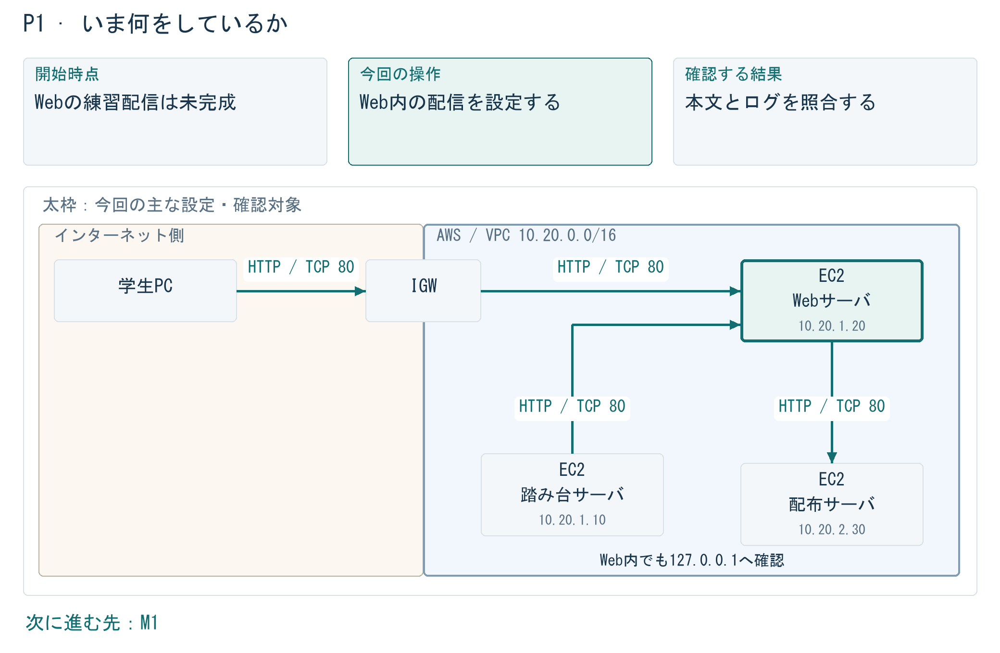

P1 HTTPで静的ファイルを返す
はじめに：接続・操作の約束 · 練習 P0〜P6 · 課題 M0〜M6 · ブラウザで確認する
2026-11-13 · D12 P/M r1.5
配布版の有効期限：2027年1月31日末（UZT）。
始める前に
共通の接続・操作を確認する。対応する自力課題はM1。課題の判定方法はブラウザ確認手順を使う。
学ぶこと
Nginx、保存先、待受、HTTP応答、access logを一組で確認する。
課題
Webの/var/www/html/practice.txtから指定本文をHTTP200で返す。Web自身・踏み台・外部の三経路で確認する。
今回の見取り図

図の太枠が今回の主な対象です。設定操作は各手順の実行場所で行い、図の矢印は接続・確認の向きを表します。 SGの通信許可は初期配備済みで、今回の課題はサーバー内の設定です。 左はインターネット側、右の枠はAWSのVPCです。IGWはVPCの境界に置き、踏み台を含む全EC2はAWS側にあります。


- File: /var/www/html/practice.txt
- URL path: /practice.txt
JDU WEB-02 practice: HTTP response verified.
仕組みを理解する
始める前の状態:
Webは提供済みだが、練習用ファイルはまだ配信していない。
このPで変えること:
Nginxが公開80番でpractice.txtを返し、要求をlogへ残す。
この練習では、URLの/practice.txtをWeb内の/var/www/html/practice.txtへ対応させる。最初の127.0.0.1での成功はWeb内部の確認で、踏み台やWindowsから届く証明にはならない。同じ本文を三つの位置から読み、どの経路まで正常かを切り分ける。Nginxの一次資料も参照。
操作例：一つずつ実行する
P1.1 内部APTからNginxを導入する
実行場所:
WebサーバーのSSM端末：ssm-user
目的と操作:
P0と同じ方法でWebへSSM接続し、role=webを確認する。APTのsourceを読み、10.20.2.30の署名済みrepoだけを使う。updateは一覧を取得し、installはpackageを導入する。Internet用sourceを追加しない。
入力するコマンド（番号はこの手順内の順番）
# 1. /etc/apt/sources.list.d/jdu-web.sources の内容を変更せずに読む。
cat /etc/apt/sources.list.d/jdu-web.sources
# 2. 内部repoのパッケージ一覧を更新する。取得エラーは失敗扱いにする。
sudo apt-get update -o APT::Update::Error-Mode=any
# 3. 内部repoから nginx を推奨追加なしで導入する。
sudo apt-get install --no-install-recommends nginx
コマンド・設定値の意味:
apt-get updateは利用可能なpackage一覧を更新し、installは選んだpackageを導入する。--no-install-recommendsは推奨packageを追加しない指定。Signed-Byは許可した署名鍵の指定であり、repoへ接続できただけでは署名確認の成功にならない。
期待する結果と読み方:
sourceに内部IPとSigned-Byがあり、署名エラーなしで終了する。インストール確認にYを入力する。
うまくいかないとき:
取得失敗ならrepoのrunning/SSMとIPを確認。--allow-unauthenticatedや外部pipで回避しない。
P1.2 正しい本文を作り、所有者と権限を揃える
実行場所:
WebサーバーのSSM端末：ssm-user
目的と操作:
まずnanoで練習本文を編集する。表示する1行は下の指定どおりで、最後に改行を入れる。Ctrl+O→Enterで保存、Ctrl+Xで終了する。installはファイルを配置し、-o/-gは所有者、-mは権限を指定する。
入力するコマンド（番号はこの手順内の順番）
# 1. 作業場所を ~ へ移す。
cd ~
# 2. 練習の作業ディレクトリを作る。既存ならそのまま使う。
mkdir -p jdu-web-practice/p1
# 3. 作業場所を jdu-web-practice/p1 へ移す。
cd jdu-web-practice/p1
# 4. 現在の作業ディレクトリを表示する。
pwd
# 5. practice.txtを編集する。本文を入力し、保存して終了する。
nano practice.txt
# File content: JDU WEB-02 practice: HTTP response verified.
# 6. 指定ファイルを配置し、所有者・グループ・権限を揃える。
sudo install -o root -g root -m 0644 practice.txt /var/www/html/practice.txt
# 7. 指定ファイルの所有者・グループ・権限・名前を読む。
stat -c '%U:%G %a %n' /var/www/html/practice.txt
# 8. /var/www/html/practice.txt の内容を変更せずに読む。
cat /var/www/html/practice.txt
コマンド・設定値の意味:
nanoで編集する自分の作業fileと、Nginxが読む配信用fileを分ける。installはここではpackage導入ではなく、コピー時にroot:rootと0644を指定するコマンド。0644では所有者だけが書け、他のuserは読める。末尾の改行も本文の一部となる。
期待する結果と読み方:
root:root 644。本文は JDU WEB-02 practice: HTTP response verified. の1行である。大文字、小文字、空白、句点も判定対象。
うまくいかないとき:
空白画面ならまだnano内。保存して終了してから次のcommandを実行する。既存のmission.txtは変更しない。
P1.3 Web rootとportを確認して起動する
実行場所:
WebサーバーのSSM端末：ssm-user
目的と操作:
Ubuntuの初期siteは/var/www/htmlをrootにする。nginx -Tで実効設定を読み、/etc/nginx/sites-enabled/defaultが有効でrootとlisten 80があることを確認する。変更が必要ならsudo nanoで編集し、構文検査に成功してからreloadする。enable --nowは今起動し、次のOS起動時も起動させる。
入力するコマンド（番号はこの手順内の順番）
# 1. Nginxの設定全体を表示する（秘密の値は共有しない）。
sudo nginx -T
# 2. Nginx設定の構文と参照ファイルを検査する。
sudo nginx -t
# 3. nginx を今すぐ起動し、次回起動時も自動起動させる。
sudo systemctl enable --now nginx
# 4. nginx を止めずに設定を再読込する。
sudo systemctl reload nginx
# 5. nginx の現在の起動状態を読む。
systemctl is-active nginx
# 6. TCP待受のIP・port・対応プロセスを表示する。
sudo ss -lntp
コマンド・設定値の意味:
nginx -Tは読込対象の設定を表示し、-tは構文を検査する。systemctlのenableは次回起動時、--nowは現在の起動を指定する。設定ファイルの保存だけで終わらず、reload後のserviceと待受portを読む。
期待する結果と読み方:
syntax is ok/test is successful、active、0.0.0.0:80等の待受。127.0.0.1:80だけでは他のサーバーから利用できない。
うまくいかないとき:
失敗時はnginx -tのfile名・行番号を確認し、そのfileを直す。SGを変更しても構文エラーは直らない。
P1.4 Web自身から応答を見る
実行場所:
WebサーバーのSSM端末：ssm-user
目的と操作:
curlはHTTP client。-iはstatus/headerと本文を表示する。127.0.0.1は今のWeb自身で、public IPではない。表示を読み、端末のcommandが成功しただけで合格としない。
入力するコマンド（番号はこの手順内の順番）
# 1. http://127.0.0.1/practice.txt へHTTP要求し、status・header・本文を表示する。
curl --noproxy '*' -i http://127.0.0.1/practice.txt
コマンド・設定値の意味:
curl -iは本文に加えてHTTP headerを表示する。127.0.0.1はこのWeb自身なので、この要求はInternetを通らない。HTTP200と指定本文の両方を読み、別ページの200を成功と取り違えない。
期待する結果と読み方:
HTTP200と指定本文。404はfile/root/URLの関係、connection refusedはservice/listenを調べる。
うまくいかないとき:
Welcome to nginxが出るなら/ではなく/practice.txtを要求したか確認する。
P1.5 踏み台と外部から同じファイルを見る
実行場所:
踏み台のSSM端末：ssm-user
目的と操作:
Web端末をexitで閉じ、CloudShellから踏み台へSSM接続して下のURLを要求する。その後exitでCloudShellへ戻り、EC2に表示された現在のWeb公開IPv4を使って同じpathをcurl -iで要求する。内部の10.20.1.20と公開IPv4を混同しない。
入力するコマンド（番号はこの手順内の順番）
# 1. http://10.20.1.20/practice.txt へHTTP要求し、status・header・本文を表示する。
curl --noproxy '*' -i http://10.20.1.20/practice.txt
コマンド・設定値の意味:
同じcurlでも踏み台から実行すれば内部通信の検査になる。WindowsのbrowserからはWebの現在の公開IPを使う。10.20.1.20をWindows側へ入力して到達できないことと、Webの停止を同一視しない。
期待する結果と読み方:
両経路とも200/同じ本文。InternetからのHTTP80は公開、管理8080とDB5432は公開しない。
うまくいかないとき:
内部成功/外部失敗なら現在のpublic IPとLab稼働を確認する。教師の基盤SGを無断で緩めない。
P1.6 要求とlogを結び付けて提出する
実行場所:
WebサーバーのSSM端末：ssm-user
目的と操作:
Webへ戻り、access logの時刻・client IP・path・statusを見る。logは実際に要求を処理した証拠で、fileがある証拠とは別。exitでCloudShellへ戻ったら、PCのWeb PortalでP1を選び「この課題を確認する」を押す。
入力するコマンド（番号はこの手順内の順番）
# 1. access log末尾20行を読み、直前のHTTP要求を探す。
sudo tail -n 20 /var/log/nginx/access.log
# 2. 現在のサーバーへの接続を閉じ、CloudShellへ戻る。
exit
コマンド・設定値の意味:
access logでは時刻・要求path・statusを直前のcurlと対応させる。tailは末尾を読む操作で、logを書き換えない。exitで接続を終えたら、PCのブラウザでP1を確認する。
期待する結果と読み方:
練習8項目と準備確認の結果が表示・保存される。P1は成績0点。M1は別file/本文で自分で構成する。
うまくいかないとき:
処理中なら結果を更新する。保存に失敗していれば表示された理由を確認する。checkerの期待本文を書き換えない。
出力の読み取り例（入力しない）
HTTP/1.1 200 OK
JDU WEB-02 practice: HTTP response verified.
上は説明用に必要な行だけを抜き出した例。実際には日時などのheaderが加わる。200と本文を読み、access logのpath/statusとも照合する。
理解の確認（採点外）
Web自身では200、踏み台からは接続失敗。本文を作り直す前に何を確認するか？
考え方:
要求先IP・待受アドレスとport・踏み台からWebへの通信許可を調べる。本文の正否と到達性を分ける。